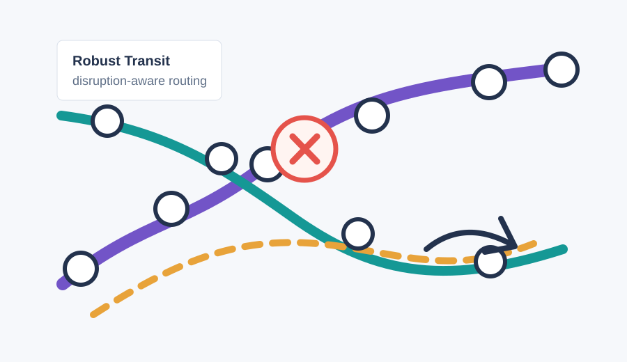
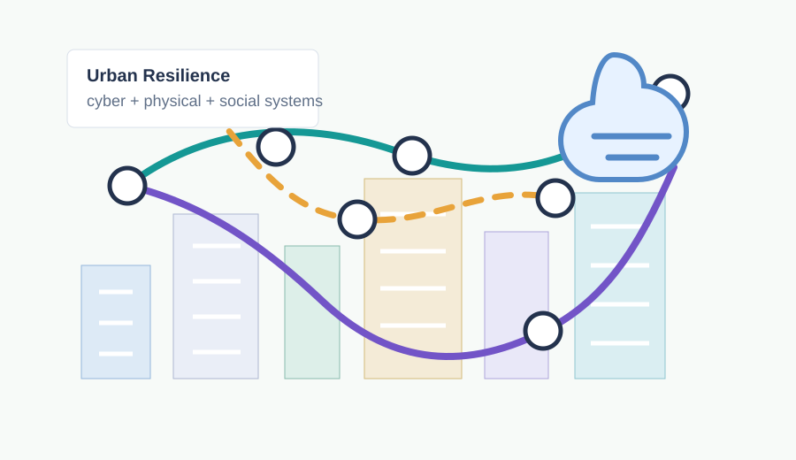
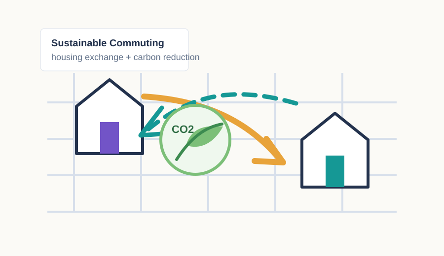
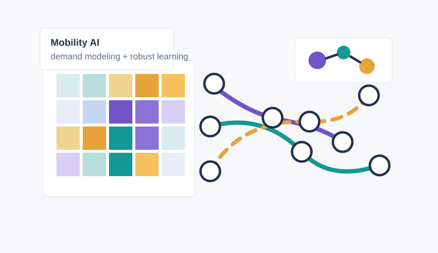

Public Transit Resilience
Transit disruption response
Models passenger behavior uncertainty and recommends resilient paths during service disruptions.
Read paperTsinghua Mobility Science Lab
MoS Lab develops models, algorithms, and data-driven tools for public transit operations, passenger behavior, mobility demand, urban resilience, and sustainable transportation policy.
Featured Research

Models passenger behavior uncertainty and recommends resilient paths during service disruptions.
Read paper
Quantifies cross-system resilience and recovery patterns during extreme weather events.
Read paper
Uses household-level housing exchange strategies to reduce excess commuting emissions.
Read paper
Develops behavior-aware robust models that bridge econometrics, optimization, and machine learning.
Read paperResearch Areas
Public transit resilience Disruption management, passenger response inference, path recommendation, and resilient operations.
Travel behavior and demand Route choice, mode choice, smart card analytics, and policy response modeling.
AI for mobility and logistics Robust learning, interpretable prediction, ETA, last-mile delivery, and time-series models.
Sustainable urban systems Commuting emissions, public health risk, housing mobility, and cyber-physical-social resilience.
Research Support
Funding information for active MoS Lab projects will be updated here as new projects are announced.
New paper: Resilience analysis of urban cyber-physical-social systems appeared in Reliability Engineering and System Safety.
2025/11/01New paper: Housing exchange framework to reduce carbon emissions from commuting appeared in Nature Sustainability.
2025/10/24New paper: Individual Path Recommendation Under Public Transit Service Disruptions Considering Behavior Uncertainty appeared in Transportation Science.
2025/05/30New paper: Robust binary and multinomial logit models for classification with data uncertainties appeared in European Journal of Operational Research.
2024/12/04Dr. Baichuan Mo started MoS Lab.